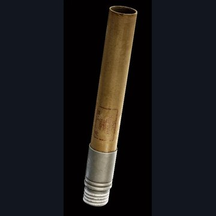
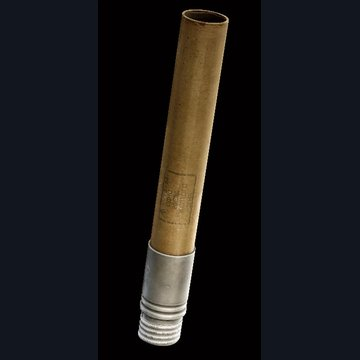
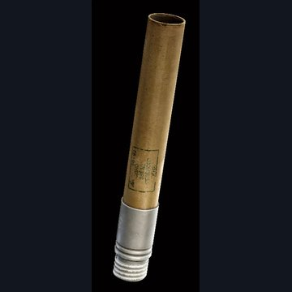

Repères de la famille
Dix armes classées par le jeu dans la catégorie des lance-grenades, dont il faut dire d’emblée ce que la famille contient réellement : sept fusées de détresse à main, un pistolet de détresse, un lance-grenades autonome de 40 mm et un lance-roquettes. Le jeu regroupe les fusées signalétiques avec les lanceurs, ce qui explique que huit de ces dix armes n’aient aucun caractère offensif.
Les mesures de la famille sont homogènes et peu tranchées : l’ergonomie va de 39 à 51, le recul vertical de 170 à 230, la cadence est fixée à 30 coups par minute pour toutes, et la distance efficace à 50 mètres. Ce sont des armes à un seul usage, dont la cadence n’a pas d’importance : ce qui compte, c’est la munition.
8 sur 10
Fusées de détresse. Les ROP-30 et RSP-30, plus le ZiD SP-81, pèsent 190 à 600 grammes et lancent des fusées éclairantes au calibre 26 x 75 mm. Ce sont des signaux, pas des armes.
2 sur 10
Lanceurs proprement dits. Le FN40GL Mk2, à 2,92 kilos, tire des grenades de 40 x 46 mm ; le lance-roquettes RShG-2, à 3,77 kilos, est le seul lance-roquettes du jeu.
2
Offres en magasin. Seules deux armes de la famille sont proposées à la vente : la fusée RSP-30 jaune chez Prapor et la RSP-30 verte chez Jaeger, au niveau 1 de fidélité.
Trois familles à ne pas confondre. Le lance-grenades autonome tire des grenades qui explosent ; le lanceur sous-canon se monte sur un fusil et suit la règle de pénétration des cartouches ; le lance-roquettes est une arme à lui seul, avec sa roquette. Les confondre, c’est se tromper de munition en magasin.
Le catalogue de la famille
Les dix armes classées en lance-grenades et lance-roquettes par le jeu, avec leurs mesures à configuration de base.
| Image | Arme | Calibre | Ergonomie | Recul vertical | Recul horizontal | Cadence (c/min) | Distance efficace (m) | Modes de tir | Munitions | Presets |
|---|---|---|---|---|---|---|---|---|---|---|
 | Fusée de détresse à main ROP-30 (blanche) | 26 x 75 mm | 51 | 170 | 400 | 30 | 50 | Semi-automatique | 7 | 0 |
 | Fusée de détresse à main RSP-30 (bleue) | 26 x 75 mm | 51 | 170 | 400 | 30 | 50 | Semi-automatique | 7 | 0 |
 | Fusée de détresse à main RSP-30 (feux d'artifice) | 26 x 75 mm | 51 | 170 | 400 | 30 | 50 | Semi-automatique | 7 | 0 |
 | Fusée de détresse à main RSP-30 (jaune spécial) | 26 x 75 mm | 51 | 170 | 400 | 30 | 50 | Semi-automatique | 7 | 0 |
 | Fusée de détresse à main RSP-30 (jaune) | 26 x 75 mm | 51 | 170 | 400 | 30 | 50 | Semi-automatique | 7 | 0 |
 | Fusée de détresse à main RSP-30 (rouge) | 26 x 75 mm | 51 | 170 | 400 | 30 | 50 | Semi-automatique | 7 | 0 |
 | Fusée de détresse à main RSP-30 (verte) | 26 x 75 mm | 51 | 170 | 400 | 30 | 50 | Semi-automatique | 7 | 0 |
 | Lance-grenades FN40GL Mk2 40 mm | 4,0 x 46 mm | 51 | 230 | 460 | 30 | 50 | Semi-automatique | 6 | 1 |
 | Pistolet de détresse ZiD SP-81 26 x 75 mm | 26 x 75 mm | 51 | 170 | 400 | 30 | 50 | Semi-automatique | 5 | 0 |
 | Lance-roquettes RShG-2 72,5mm | 7,25 x 25 mm | 39 | 180 | 150 | 30 | 50 | Semi-automatique | 1 | 1 |
La colonne Munitions compte les références compatibles recensées dans le catalogue des munitions. Pour le lance-roquettes RShG-2, elle indique une seule référence, dont la munition correspondante n’apparaît pas dans les deux cents cartouches du catalogue : le projectile de roquette n’est pas exporté dans les données de munitions.
Presets publiés
Deux presets seulement sont rattachés aux dix armes de la famille : le FN40GL Mk2 et le lance-roquettes RShG-2. Les fusées de détresse n’ont pas de configuration, ce qui est logique — ce sont des objets à usage unique.
Aucun preset publié pour cette famille dans l’instantané consulté.
Acquisition et disponibilité
Deux armes de la famille sont proposées en magasin dans l’instantané : la fusée RSP-30 jaune à 2 927 roubles chez Prapor, et la RSP-30 verte à 7 509 roubles chez Jaeger. Les huit autres s’obtiennent en raid ou par tâche.
| Arme | Marchands | Niveau de fidélité | Prix |
|---|---|---|---|
| Fusée de détresse à main RSP-30 (jaune) | Prapor | 1 | 2 927 ₽ |
| Fusée de détresse à main RSP-30 (verte) | Jaeger | 1 | 7 509 ₽ |
Côté munition, l’offre marchande est encore plus étroite : sur les sept fusées éclairantes de 26 x 75 mm, seule la jaune est en magasin, à 4 212 roubles. Sur les six projectiles de 40 x 46 mm, seul le M386 est proposé. Les autres projectiles ne s’achètent qu’en raid ou au marché.
Comment s’équiper
- Le 40 x 46 mm se choisit par type. Quatre références explosives affichent 199 points de dégâts et une pénétration de 1 : elles frappent par explosion, pas par pénétration. Le M576 MP-APERS est le cas particulier : il compte quinze projectiles, 160 points de dégâts et une pénétration de 5. C’est le projectile qui décide du résultat.
- Les fusées éclairantes ne sont pas des cartouches de combat. Les sept références de 26 x 75 mm ont 37 ou 40 points de dégâts et une pénétration de 0 : elles éclairent, elles marquent une position, elles ne percent rien. Les confondre avec une arme offensive serait une erreur de lecture.
- Le lanceur sous-canon n’est pas dans cette page. Il figure dans le catalogue comme pièce d’arme : le M203, par exemple, se monte sur un fusil et permet de tirer une grenade de 40 mm à partir d’une arme existante. C’est une autre économie : pas d’arme supplémentaire, mais une pièce de plus sur l’arme principale.
Sources et limites
Les mesures viennent de l’export communautaire du 18 novembre 2026. Les caractéristiques des projectiles de 40 x 46 mm et de 26 x 75 mm proviennent du même export ; la munition du lance-roquettes RShG-2 n’y figure pas, et son comportement ne peut donc pas être décrit à partir de ces données.
- Tarkov.dev — catalogue des armes et de leurs presetsDonnées communautaires
- Tarkov.dev — items, équipement, munitions et skills (PvP ; autres modes via le catalogue)Données communautaires
- Tarkov.dev — catalogue officiel des exports JSONDonnées communautaires
- Escape from Tarkov WikiWiki communautaire
- KappaGuide — outils, cartes et guidesOutil communautaire